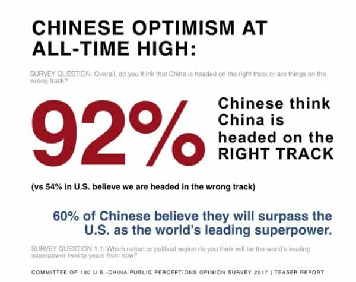
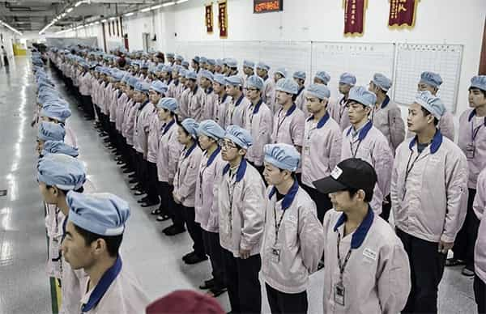

André is a young European who left his decaying country in 2012 for greener pastures. He enjoys exploring subterranean places, reading about a host of interconnected topics, and yearns for Tradition.


The Current Year in the West is unbalanced and self-destructive. Native Westerners’ demography is in free-fall, families are rare or fragile, the mainstream culture is treacherous and toxic, the power and money have been taken away and given to violent organized anti-male, anti-white groups. Most women and effete blue pills try to ignore or trivialize the situation when they’re not straightly SJWish.
I recently witnessed a leftist soyboy talking for hours to a female “friend” he never fucked and will likely never fuck to pressure her into remaining inside the leftist creed. “Doesn’t matter to be a friendzoned beta wimp, I will pretend I’m someone by acting as a leftist watchdog!” Many whites behave like that. They direct their need for identity and belonging to some version of the blue pill, thus only gaining some semblance of being by contributing to the ignominious fall of their own civilization.
Some women admire us. At another time I saw a self-claimed female “love coach” whose eyes sparkled when I told her I was writing at Return of Kings. “God, at least someone who’s neither left-wing nor an egregious MGTOW!” These kindred feelings, though, tend to remain discrete. Women are natural born conformists and fear getting singled out if they express beyond the “normal” degeneracy cesspool.
Drawing up an exhaustive list of the problems in Current Year West looks like pouring water into the Danaides’ sieve. Parasites who pose as regular people or poor unprivileged abound. White guilt, female narcissism, male conformism—the Current Year is a clusterfuck of problems fostering endless divisions and confusions.
Sometimes you just want to turn the media off
And then there’s China.
In 1816, Napoléon Bonaparte is supposed to have said “let China sleep, for when it will wake up, the world will tremble.” A century later, Lothrop Stoddard wrote in the Rising Tide of Color about China’s cheap labour combined with enormous reserves of iron and coal, then the basis of industry. Later again the French politician Alain Peyrefitte wrote a two-volumes book on China’s potential, followed by a sequel, China has woken up. These men were right.
In Peyrefitte’s words, China has been an “immobile empire” for centuries. It was forced into mobility by English cannons, debilitated by the opium trade, taken over by Communists who killed between 30 and 50 million people in the name of progress, and even then, the Middle Kingdom did come back. In a very short time, this purportedly undeveloped nation managed to become an industrial powerhouse and flood the world with its products.
Sure, many Chinese are working their asses off 14 hours a day in sweatshops. But deep down, they can do so because they are motivated to do so. They aren’t isolated atoms—they still follow traditions that keep female hypergamy in check, and they are part of a mighty empire, like cells who can fully identify to a magnificent higher organism. They do not suffer from the disease that became normal across the West. The Chinese tend to be realistic about leftism, powerful communities, to care about their family and traditions, and they are extremely optimistic about the future of their country.

When we, red-pilled Westerners, tend to struggle individually to get our lives in order and, in the better case, start a family, the numerous Chinese tend to form a homogeneous block who has been expanding in all directions. Since whitey has been leaving Africa, China has steadily taken his place. On the other side of the pond, as Brazil keeps paddling into a typical Latin-American corruption scandal, the Confucian dragon invested more than $30 billion there so that the vast Brazilian fields will keep growing food for the Han instead of feeding their own industry.
China is also heavily involved into the research race. In September, a Beijing lab has held the world’s first quantum intercontinental video call on what is said to be a breakthrough in secure communications. Before that, China had already build a complete quantum communications network between Beijing and Shanghai. Disgruntled CIA and NSA spies will have to shift to another target—for example, their own young commenting the news on Facebook.
China has also embarked on a space race and may take the lead there, in spite of decades of American accumulated advances.
Also, last but not least, China was never hostile to eugenics. Just like their Singaporean cousins, the Chinese constantly tried to improve their stock since they have become aware of it:
A Eugenic Law of 1994 made it compulsory for pregnant women to undergo prenatal diagnosis for the presence of genetic and congenital disorders in the fetus and to have abortions where these disorders have been diagnosed. Chinese physicians and geneticists are much more sympathetic to eugenics than are those in Western democracies. For instance, in a survey of attitudes to eugenic practices carried out from 1994 to 1996, 82 percent of Chinese physicians and geneticists supported the mandatory sterilization of, for example, a single blind woman on public welfare who has already had three blind children by three different men (all absent from the household), as compared with around 5 percent of physicians and geneticists in the Western democracies. (Richard Lynn, Eugenics: a Reassessment, p.41)
The Chinese prove that a high IQ, ethnocultural homogeneity and a strong work ethic can achieve much. Intelligence can be used to succeed in almost any field. No leftism at all is needed to build a flourishing civilization. Leftism looks more like a cancer, feasting on an old man’s barely alive body. China has no real leftism inside, and China wants its place under the sun. Who’s going to prevent it from taking the first place?

Even if we could, I’m not sure we would do so. No one’s motivated to defend the Western world when the West is not Western anymore. Instead, one could drift towards favoring a meritorious people over the degenerate white normies. In Richard Lynn’s words: “I am profoundly thankful for the existence of the Chinese, Japanese, and Koreans. The torch of civilization will pass to them.”
Will the West witness the rise of tradition again, with patriarchal nationalism, identity and a vivid spiritual breath blending into a rejuvenating fountain of youth? Could China’s system crumble due to its own failures? Or will we become “a bemused footnote in the Chinese Encyclopedia of World History”, as Jared Taylor once wrote?
On the other hand, no one is forcing us to buy cheap crap all the time or to die with countries we cannot identify with anymore. The Chinese haven’t been investing in Bitcoin as they were too busy making our clothes. And definitely, we can live on our own, travel, tinker, and build the tribes we need.
Read Next: Why I Don’t Believe In Chinese Greatness